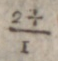

Brüche
Bei der Transkription von Brüchen sind die Beschränkungen des Unicode mit eigenständigen Zeichen zu beachten. Häufig gebrauchte Brüche besitzen entsprechende Zeichenkodierungen (z. B. ½). Ist der Bruch nicht in den standardisierten Unicodetabellen zu finden, ist eine Kombination aus mehreren Zeichen notwendig.
Eigenständige Brüche (ein Zeichen)
Brüche werden, sofern vorhanden, mittels ihrer entsprechenden Kodierungen oder Zeichen wiedergegeben:
| Zeichen oder Vorlage |
|---|
| ½Bruch einhalb dezimal: ½ hex: ½ |
| ⅓Bruch eindrittel dezimal: ⅓ hex: ⅓ |
| ⅔Bruch zweidrittel dezimal: ⅔ hex: ⅔ |
| ¼Bruch einviertel dezimal: ¼ hex: ¼ |
 1¼Bruch ein und einviertel dezimal:
1¼
hex: 1¼
1¼Bruch ein und einviertel dezimal:
1¼
hex: 1¼ |
| ¾Bruch dreiviertel dezimal: ¾ hex: ¾ |
| ⅕Bruch einfünftel dezimal: ⅕ hex: ⅕ |
| ⅖Bruch zweifünftel dezimal: ⅖ hex: ⅖ |
| ⅗Bruch dreifünftel dezimal: ⅗ hex: ⅗ |
| ⅘Bruch vierfünftel dezimal: ⅘ hex: ⅘ |
| ⅙Bruch einsechstel dezimal: ⅙ hex: ⅙ |
| ⅚Bruch fünfsechstel dezimal: ⅚ hex: ⅚ |
| ⅐Bruch einsiebtel dezimal: ⅐ hex: ⅐ |
| ⅛Bruch einachtel dezimal: ⅛ hex: ⅛ |
| ⅜Bruch dreiachtel dezimal: ⅜ hex: ⅜ |
| ⅝Bruch fünfachtel dezimal: ⅝ hex: ⅝ |
| ⅞Bruch siebenachtel dezimal: ⅞ hex: ⅞ |
| ⅑Bruch einneuntel dezimal: ⅑ hex: ⅑ |
| ⅒Bruch einzehntel dezimal: ⅒ hex: ⅒ |
Kombinierte Brüche (mehrere Zeichen)
Kombinierte Brüche bestehen aus mehreren Zeichen. Der Zähler und Nenner sind als normale Zeichen zu transkribieren. Getrennt werden diese Zeichen durch einen Bruchstrich. Dieser ist mit ⁄ ⁄ zu kodieren.
| Vorlage | Zeichen | Kommentar |
|---|---|---|
 |
dy⁄dx | |
 |
270⁄19 | |
 |
2⁄1 | |
|  | 2+⁄1 | |
| ⁄ | ⁄Bruchstrich dezimal: ⁄ hex: ⁄ | Bruchstrich |